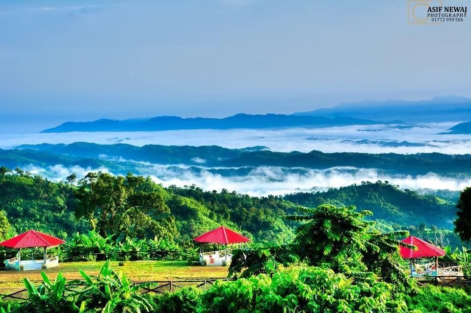

Sajek Valley

Explore Sajek Valley
Sajek Valley, often referred to as the 'Queen of Hills,' is one of the most popular tourist destinations in Bangladesh. Located in the Chittagong Hill Tracts, Sajek offers breathtaking views of mountains, clouds, and lush greenery. Some highlights include:
- Magnificent sunrises and sunsets from the valley's hilltops.
- Cloud-kissed mountains offering a surreal experience.
- Rich culture and traditions of indigenous communities.
- Tranquil trails and lush green landscapes for hiking and relaxation.